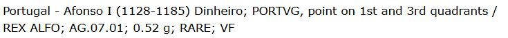

A Numisma é a mais antiga e mais importante casa de leilões de moedas em Portugal. Ao longo dos anos, tem tido o dom de apresentar no mercado um sem número de peças com extremo interesse histórico e coleccionista. Este próximo leilão, que decorrerá no dia 4 de Dezembro, não foge à regra. De modo que o catálogo se encontra recheado de peças raríssimas, num estado de conservação exemplar.
Ainda assim, como é aliás hábito dessa casa leiloeira, no meio das preciosidades, há sempre peças falsificadas e restauradas, sem qualquer menção ao facto, e que os nossos ilustres numismatas, com alguma dose de estudo, certamente identificarão.
Falando de moedas originais, salta à vista o dinheiro de D. Afonso Henriques que, para mim, tendo concluído o inventário dessas moedas, constitui uma novidade.
A leitura da legenda, no entanto, é incorrecta e demonstra cabalmente a ignorância dos numismatas da Numisma no que diz respeito aos dinheiros do nosso rei fundador.
Se tudo correr conforme o previsto, entre o final deste ano e o início do próximo, estará disponível no mercado o meu próximo livro: "O Princípio Salomónico da Iconografia Nacional", que porá finalmente ordem no monetário afonsino e demonstrará as falsificações que foram colocadas no mercado por todas as casas leiloeiras nacionais, ao longo de muitos anos.